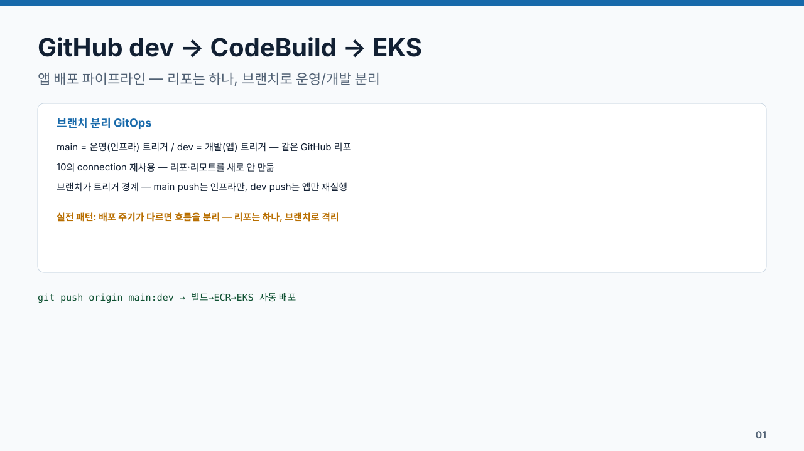
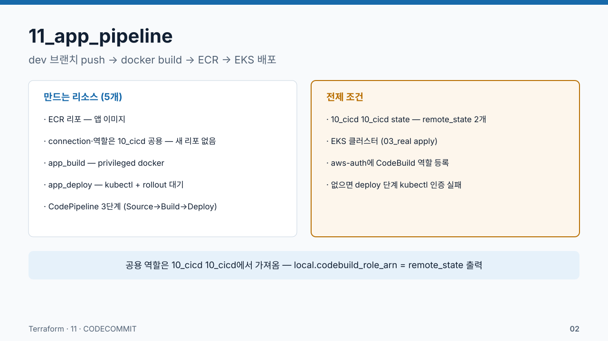
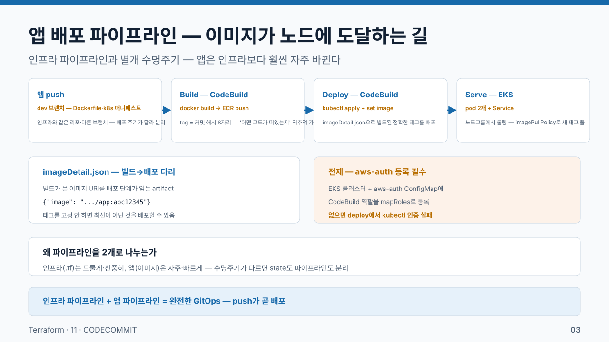
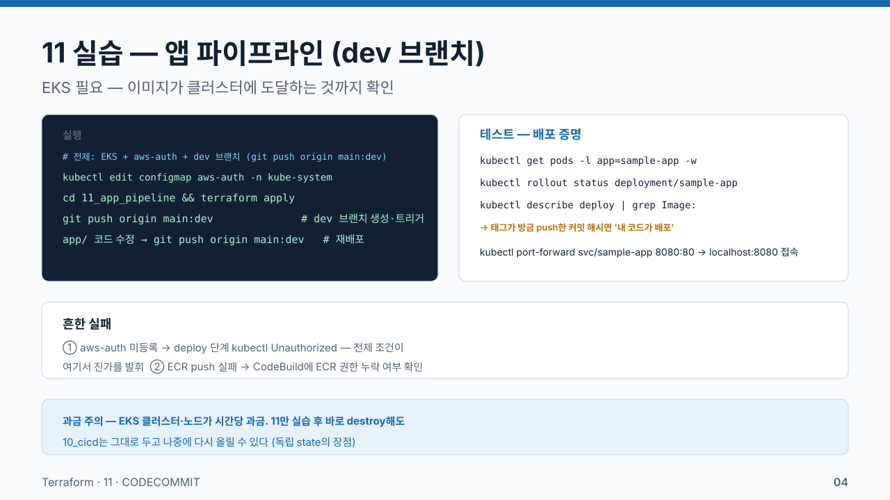

yundo-main/aws-terraform (GitHub 리포 하나)
├── main 브랜치 → 10_cicd 인프라 파이프라인 트리거 (운영)
└── dev 브랜치 → 11_app_pipeline 앱 파이프라인 트리거 (개발)CodeCommit·별도 리포 없이 평소 하던 git push만으로 두 파이프라인이 각자의 브랜치를 감시합니다.
(10_cicd를 apply해야 github_connection_arn 출력이 생깁니다)
03_real apply (EKS 포함) 또는 eks_cluster_name 변수 변경 kubectl edit configmap aws-auth -n kube-system
# mapRoles에 추가:
# - rolearn: <10_cicd outputs의 codebuild_role_arn>
# username: codebuild
# groups: ["system:masters"]| 리소스 | 역할 |
|---|---|
aws_ecr_repository.app | 앱 이미지 저장소 |
aws_codebuild_project.app_build | privileged_mode docker build → ECR push |
aws_codebuild_project.app_deploy | kubectl apply + set image + rollout 대기 |
aws_codepipeline.app | Source→Build→Deploy 3단계 — 소스는 10_cicd의 connection 공용 |
(10_cicd의 aws_codestarconnections_connection 재사용) | 별도 연결 생성 없음 — 역할 권한도 이미 커버 |
terraform init
terraform apply# 1) dev 브랜치 생성 (한 번) — 앱 파이프라인은 dev를 감시
git push origin main:dev
# 2) 앱 코드를 고치고 push → 이미지 빌드 → EKS 배포 자동 실행
# (11_app_pipeline/app/ 안 파일을 수정 → 커밋 → dev로 push)
git commit -am "app v2"
git push origin main:dev # main의 변경을 dev로 넘기며 트리거build tag: <커밋 해시> 확인 → Deploy 로그에서 set image·rollout 대기kubectl rollout status deploy/sample-app + kubectl port-forward svc/sample-app 8080:80왜 브랜치로 나누는가: main에 push할 때마다 앱 이미지까지 재빌드되면 낭비입니다.
브랜치가 트리거 경계라, 인프라 변경은 main, 앱 변경은 dev로 흐름을 나눕니다 —
단일 리포의 단순함과 리포 분리의 격리 효과를 동시에 얻는 절충입니다.
local.*은 10_cicd의 출력입니다 — connection·역할·버킷을 새로 안 만듭니다.imageDetail.json이 빌드→배포 간 이미지 URI를 전달하는 artifact입니다.11_app_pipeline/)로 참조 — 소스가 모노리포라 디렉터리 그대로 동작합니다.github_repo만 바꾸면 됩니다 — 구조는 같습니다.



아래 명령은 터미널에서 프로젝트 루트(aws-tf/) 기준으로 실행합니다.
복사 버튼으로 명령을 가져간 뒤 터미널에 붙여넣기 (⌘V) 하세요.
terraform initkubectl edit configmap aws-auth -n kube-system
# mapRoles에 추가:
# - rolearn: <10_cicd outputs의 codebuild_role_arn>
# username: codebuild
# groups: ["system:masters"]# 1) dev 브랜치 생성 (한 번) — 앱 파이프라인은 dev를 감시
git push origin main:dev
# 2) 앱 코드를 고치고 push → 이미지 빌드 → EKS 배포 자동 실행
# (11_app_pipeline/app/ 안 파일을 수정 → 커밋 → dev로 push)
git commit -am "app v2"
git push origin main:dev # main의 변경을 dev로 넘기며 트리거| 파일 | 리소스 / 데이터 소스 |
|---|---|
00-remote-state.tf | terraform_remote_state.cicd |
01-provider.tf | (선언 없음) |
main.tf | aws_ecr_repository.app |
outputs.tf | (선언 없음) |
variables.tf | (선언 없음) |
※ 브라우저에서는 실행할 수 없습니다 — 명령을 복사해 터미널에 붙여넣으세요.
상단 내비게이션을 클릭하면 해당 패널이 표시됩니다. 주소창 해시(#tab-slides 등)로 특정 탭에 바로 이동할 수 있습니다.
‹ › 버튼 또는 ← → 키로 이동합니다ESC · ✕ 닫기 · 어두운 배경 클릭으로 닫습니다| 키 | 동작 |
|---|---|
← → | 뷰어에서 이전/다음 슬라이드 |
ESC | 뷰어 닫기 |
index.html을 브라우저로 바로 열면 됩니다# ============================================================
# 00-remote-state.tf — 10_cicd의 출력을 읽는 연결부
# artifact 버킷·공용 역할·connection을 한 state에서 가져온다
# ============================================================
# remote_state — 다른 단계의 출력 읽기
data "terraform_remote_state" "cicd" {
backend = "local"
config = {
path = "../10_cicd/terraform.tfstate"
}
}
locals {
artifacts_bucket = data.terraform_remote_state.cicd.outputs.artifacts_bucket
codebuild_role_arn = data.terraform_remote_state.cicd.outputs.codebuild_role_arn
pipeline_role_arn = data.terraform_remote_state.cicd.outputs.pipeline_role_arn
pipeline_role_name = data.terraform_remote_state.cicd.outputs.pipeline_role_name
connection_arn = data.terraform_remote_state.cicd.outputs.github_connection_arn
}
terraform {
required_version = ">= 1.6.0, < 2.0.0"
required_providers {
aws = {
source = "hashicorp/aws"
version = "~> 5.0"
}
}
}
provider "aws" {
region = var.aws_region
default_tags {
tags = {
Project = "aws-tf"
Stage = "11_app_pipeline"
ManagedBy = "terraform"
}
}
}
# CodeBuild — 앱 이미지 빌드 + ECR push
# 출력: imageDetail.json (다음 단계가 읽을 이미지 URI)
version: 0.2
phases:
pre_build:
commands:
- aws ecr get-login-password --region $AWS_DEFAULT_REGION | docker login --username AWS --password-stdin $ECR_URI
- TAG=${CODEBUILD_RESOLVED_SOURCE_VERSION:0:8} # 커밋 해시 앞 8자리를 이미지 태그로
- echo "build tag: $TAG"
build:
commands:
- cd "$APP_DIR"
- docker build -t "$ECR_URI:$TAG" .
post_build:
commands:
- docker push "$ECR_URI:$TAG"
- printf '{"image":"%s:%s"}' "$ECR_URI" "$TAG" > imageDetail.json
artifacts:
files:
- imageDetail.json
- '11_app_pipeline/app/deployment.yaml'
# CodeBuild — EKS 배포 단계
# imageDetail.json의 이미지 태그로 deployment 이미지를 교체
version: 0.2
phases:
install:
commands:
- curl -fsSL -o kubectl "https://dl.k8s.io/release/v1.32.0/bin/linux/amd64/kubectl"
- install -m 0755 kubectl /usr/local/bin/kubectl && kubectl version --client
build:
commands:
- aws eks update-kubeconfig --name "$EKS_CLUSTER_NAME" --region "$AWS_DEFAULT_REGION"
- IMAGE=$(grep -o '"image":"[^"]*"' imageDetail.json | cut -d'"' -f4)
- echo "deploy image: $IMAGE"
- kubectl apply -f 11_app_pipeline/app/deployment.yaml
- kubectl set image "deployment/$APP_NAME" "$APP_NAME=$IMAGE"
- kubectl rollout status "deployment/$APP_NAME" --timeout=120s
# ============================================================
# main.tf — 애플리케이션 배포 파이프라인
# 앱 코드 push → docker build → ECR push → EKS 배포
# 소스 = GitHub dev 브랜치 (10_cicd의 connection 공용) — 역할·버킷도 remote_state로
# ============================================================
# ---------- 이미지 저장소 ----------
# ECR — 앱 이미지 저장소
resource "aws_ecr_repository" "app" {
name = var.app_name
force_delete = true # 실습용 — 이미지 있어도 삭제 가능
}
# ---------- CodeBuild: docker build ----------
# CodeBuild — plan/apply 실행 환경
resource "aws_codebuild_project" "app_build" {
name = "${var.project_name}-app-build"
service_role = local.codebuild_role_arn # 10_cicd의 공용 역할
source {
type = "CODEPIPELINE"
buildspec = "11_app_pipeline/buildspec-app-build.yml"
}
artifacts { type = "CODEPIPELINE" }
environment {
compute_type = "BUILD_GENERAL1_SMALL"
image = "aws/codebuild/standard:7.0"
type = "LINUX_CONTAINER"
privileged_mode = true # docker 데몬 사용에 필수
environment_variable {
name = "ECR_URI"
value = aws_ecr_repository.app.repository_url
}
environment_variable {
name = "APP_DIR"
value = "11_app_pipeline/app"
}
}
}
# ---------- CodeBuild: EKS deploy ----------
# CodeBuild — plan/apply 실행 환경
resource "aws_codebuild_project" "app_deploy" {
name = "${var.project_name}-app-deploy"
service_role = local.codebuild_role_arn
source {
type = "CODEPIPELINE"
buildspec = "11_app_pipeline/buildspec-app-deploy.yml"
}
artifacts { type = "CODEPIPELINE" }
environment {
compute_type = "BUILD_GENERAL1_SMALL"
image = "aws/codebuild/standard:7.0"
type = "LINUX_CONTAINER"
environment_variable {
name = "EKS_CLUSTER_NAME"
value = var.eks_cluster_name
}
environment_variable {
name = "APP_NAME"
value = var.app_name
}
}
}
# ---------- CodePipeline: 앱 배포 ----------
# CodePipeline — 단계 오케스트레이션
resource "aws_codepipeline" "app" {
name = "${var.project_name}-app-pipeline"
role_arn = local.pipeline_role_arn # 10_cicd의 공용 역할
artifact_store {
location = local.artifacts_bucket
type = "S3"
}
stage {
name = "Source"
action {
name = "AppSource"
category = "Source"
owner = "AWS"
provider = "CodeStarSourceConnection"
version = "1"
output_artifacts = ["app_source"]
configuration = {
ConnectionArn = local.connection_arn
FullRepositoryId = var.github_repo
BranchName = var.repo_branch
OutputArtifactFormat = "CODE_ZIP"
DetectChanges = "true"
}
}
}
stage {
name = "Build"
action {
name = "DockerBuild"
category = "Build"
owner = "AWS"
provider = "CodeBuild"
version = "1"
input_artifacts = ["app_source"]
output_artifacts = ["image_out"] # imageDetail.json — 다음 단계가 읽을 이미지 태그
configuration = {
ProjectName = aws_codebuild_project.app_build.name
}
}
}
stage {
name = "Deploy"
action {
name = "DeployEKS"
category = "Build"
owner = "AWS"
provider = "CodeBuild"
version = "1"
input_artifacts = ["image_out"]
configuration = {
ProjectName = aws_codebuild_project.app_deploy.name
}
}
}
}
output "app_ecr_url" {
description = "앱 이미지 ECR 리포지토리 URL"
value = aws_ecr_repository.app.repository_url
}
output "app_pipeline_name" {
description = "앱 배포 CodePipeline 이름"
value = aws_codepipeline.app.name
}
variable "aws_region" {
description = "AWS 리전"
type = string
default = "ap-northeast-2"
}
variable "project_name" {
description = "리소스 이름 접두사 (10_cicd와 같은 값이어야 함)"
type = string
default = "aws-tf-cicd"
}
variable "app_name" {
description = "배포할 앱 이름 — ECR 리포·k8s deployment 이름"
type = string
default = "sample-app"
}
variable "github_repo" {
description = "앱 소스 GitHub 리포 — owner/repo 형식 (인프라와 같은 리포, 브랜치로 분리)"
type = string
default = "yundo-main/aws-terraform"
}
variable "repo_branch" {
description = "앱 파이프라인이 감지할 브랜치 — 개발(dev), 운영(main)과 분리"
type = string
default = "dev"
}
variable "eks_cluster_name" {
description = "배포 대상 EKS 클러스터 (03_real의 클러스터)"
type = string
default = "terraform-eks-cluster"
}
apiVersion: apps/v1
kind: Deployment
metadata:
name: sample-app
spec:
replicas: 2
selector:
matchLabels: { app: sample-app }
template:
metadata:
labels: { app: sample-app }
spec:
containers:
- name: sample-app
image: IMAGE_PLACEHOLDER # deploy 단계가 set image로 교체
ports:
- containerPort: 80
---
apiVersion: v1
kind: Service
metadata:
name: sample-app
spec:
type: ClusterIP
selector: { app: sample-app }
ports:
- port: 80
targetPort: 80